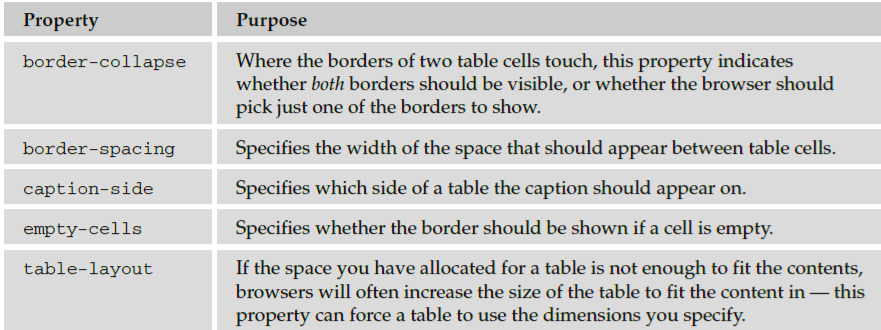
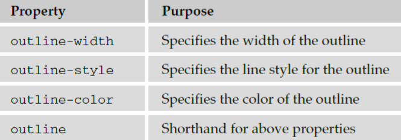

Tables
In the last chapter, you saw a couple of examples that use CSS with tables. Properties that are commonly
used with the < table > , < td > , and < th > elements include the following:
- border to set the properties of the border of a table.
- padding to set the amount of space between the border of a table cell and its content — this
property is very important to make tables easier to read.
- Properties to change text and fonts.
- text - align to align writing to the left, right, or center of a cell.
- vertical - align to align writing to the top, middle, or bottom of a cell.
- width to set the width of a table or cell.
- height to set the height of a cell (often used on a row as well).
- background - color to change the background color of a table or cell.
- background - image to add an image to the background of a table or cell.
Now take a look at the style sheet for this table:
body {color:#000000; background-color:#ffffff;}
h1 {font-size:18pt;}
p {font-size:12pt;}
table {
background-color:#efefef;
width:350px;
border-style:solid;
border-width:1px;
border-color:#999999;
font-family:arial, verdana, sans-serif;}
caption {
font-weight:bold;
text-align:left;
border-style:solid; border-width:1px; border-color:#666666;
color:#666666;}
th {
height:50px;
font-weight:bold;
text-align:left;
background-color:#cccccc;}
td, th {padding:5px;}
td.code {
width:150px;
font-family:courier, courier-new, serif;
font-weight:bold;
text-align:right;
vertical-align:top;}
Here are some key points to note about this example. You will be altering settings of some of these
properties using new properties that you will meet throughout this section.
- The rule for the < table > element uses a width property to fix the width of the table to 350
pixels; otherwise, it would take up as much of the screen as needed to show as much text as
possible on one line.
- The rule for the < table > element also has a border property set, which creates a single-pixel
border all around the table. Note, however, that none of the other cells in the table inherits this
property.
- The rule that applies to the < caption > element has its font - weight , border , and text - align
properties set. By default the text is normal (not bold), aligned in the center, and without
a border.
- The rule that applies to the < th > element sets the height of the headings to 50 pixels, and the
text is aligned left (rather than centered, which is the default).
There is a rule that applies to both the < th > and < td > elements, and this indicates that both
should have a padding property set to 5px so that the content of the cells does not touch the
border of those cells. Creating space around the cells is very important and makes the table
more readable.
- The final rule states that the < td > elements whose class attribute has a value of code are given
a width property whose value is 150px (150 pixels). This ensures that the content of this whole
column remains on one line. Unfortunately, there is no way to assign a style to a column, but in
the case of the width property, once it has been set on one element it does not need to be set on
all the others in the column.
- You may also have noticed in Figure 8 - 13 that there is a white line around the two columns (which is
particularly noticeable around table header cells). Browsers automatically add this to separate each cell
from its neighbor. You can, however, remove this gap using a property called border - spacing , which
you ’ ll learn about in the next section.
Table - Specific Properties
In the following section you will meet five properties that can only be used with tables, and also some
values for the border - style property that only apply to tables. Most of these properties were first
supported in IE7 and FF2.

Outlines
Outlines are similar to the borders that you met in the last chapter, but there are two crucial differences:
An outline does not take up space.
Outlines do not have to be rectangular.
The idea behind the outline properties is that you might want to highlight some aspect of a page for the
user; this property will allow you to do that without affecting the flow of the page (where elements are
positioned) in the way that a physical border would take up space. It ’ s almost as if the outline style sits
on top of the page.
Unfortunately, the outline properties are not supported by Internet Explorer 8 (or earlier versions).
They do work in other major browsers (although there can be some slight variations in appearance in
different browsers).
The table that follows lists the four outline properties.

The outline - width Property
The outline - width property specifies the width of the outline to be added to the box. Its value should
be a length or one of the values thin , medium , or thick — just like the border - width attribute.
input {border-width:2px;}
The outline - style Property
The outline - style property specifies the style for the line ( solid , dotted , or dashed ) that goes
around the box. Its value should be one of the values used with the border - style property you learned
about in Chapter 7. For example:
input {outline-style:solid;}
The outline - color Property
The outline - color property allows you to specify the color of the outline. Its value should either be a
color name, a hex color, or an RGB value, as with the color and border - color properties you learned
about in Chapter 7. For example:
input {outline-color:#ffoooo;}
The outline Property (the Shorthand)
The outline property is the shorthand that allows you to specify values for any of the three properties
discussed previously in any order you like. The following example features a paragraph of text:
Inside this paragraph the word in bold is going to have an
outline.
There is a rule that says the contents of the < b > element should have an 8-pixel dashed red border
around the edge ( ch08_eg19.css ):
b {outline: #ff0000 8px dashed;}